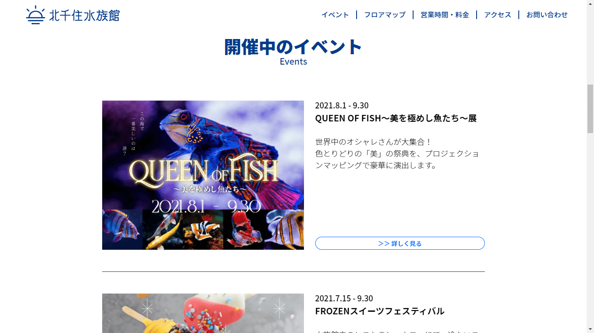

仮想サイト制作ー 北千住水族館 －
-
制作環境
ツール：Visual Studio Code／XD／illustrator
言語：HTML/SCSS／Javascript（jQuery）
制作期間：1日
担当範囲：サイトトップデザイン
コーディング（レスポンシブ含む）
※トップページのみ -
使用ライブラリ
ScrollReveal.js
工夫した点
-
 サイトトップページは長くなりすぎないよう4つのコンテンツに絞り込み、「お知らせ」や「イベント」など更新頻度が高いコンテンツを上部に設置しました。
-

背景に黒フィルターをかけ、セクションに奥行きができるようにデザインしました。
制作手順
-
① XDのカンプを作成
PCサイズはユーザー数が多い「1366px×768px」、スマホはiPhoneXの「375px×812px」を選定。
使用する色を5色に絞り、コーディングの効率も視野に入れてデザインを行いました。 -
② イメージをWebpに変換
オンラインツールを使用してWebpに変換します。
自分で決めたセクションに基づいてファイル名を書き換えます。 -
③ SCSS環境の構築
ローカルにフォルダを作成し、VSCode上で環境を整えます。
-
④ PCコーディング
mixinで色・ボタンのテンプレートを設定しています。
できるだけ少ないコードで構築できるように意識しました。 -
⑤ 最適なJSを検討
適したライブラリを調べます。
効果をあてる際はテスト用のHTMLを作成し、そこでテストを繰り返した後に本ファイルに移しています。 -
⑥ pxズレの微調整
画面背景にカンプ画像を敷き、pxのズレを整えます。
参考ツール：Chrome拡張機能「Perfect Pixel」 -
⑦ レスポンシブコーディング
ブレイクポイントはiPadの「768px」に設定。
リキッドデザインにする為、mixinを用いて計算式を用意し、全てのpxをvwへ変換します。 -
⑧ 実機確認
サーバーにフォルダをアップし、各PCブラウザと実機（iPhoneX）での確認を行います。